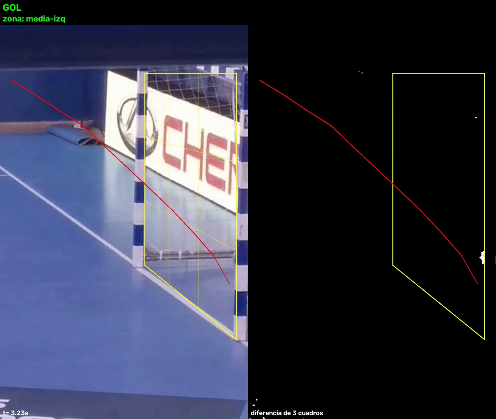
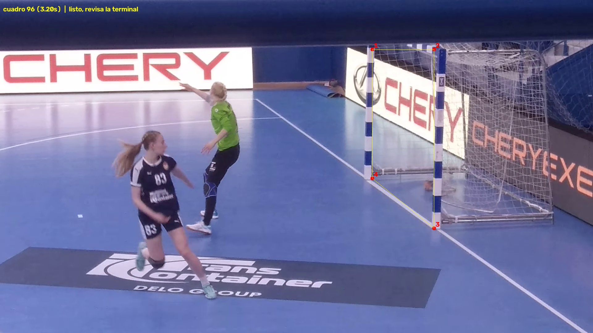
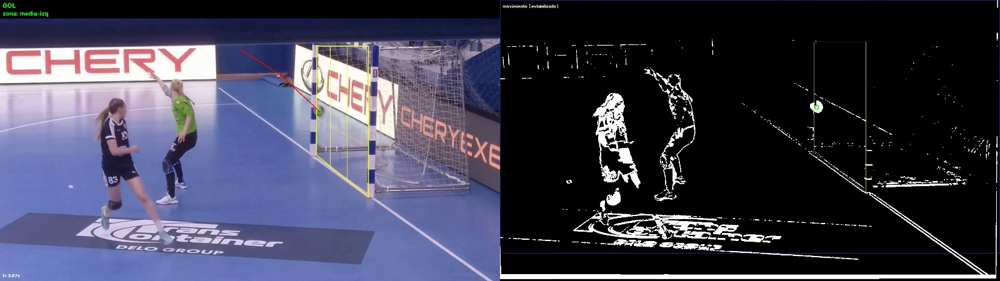
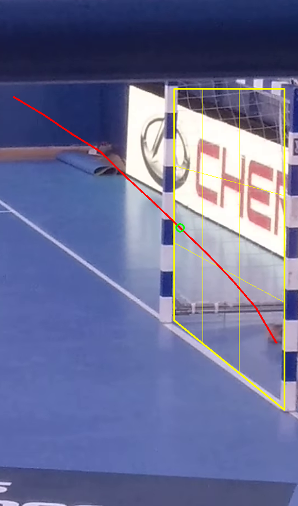
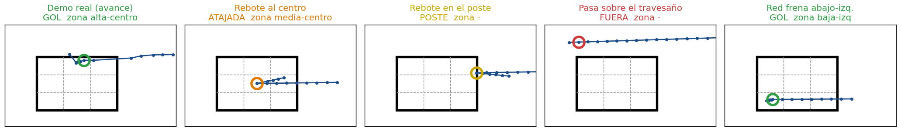
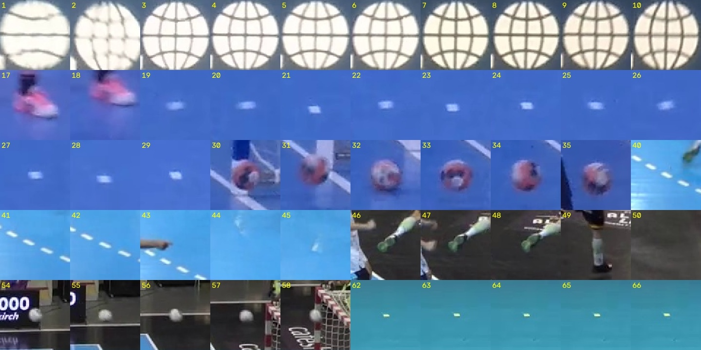
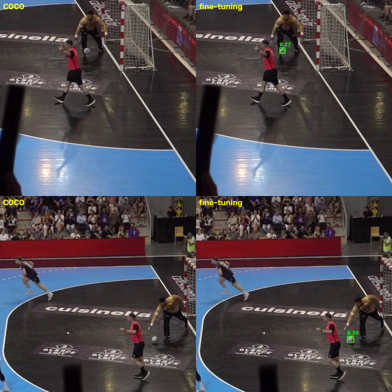
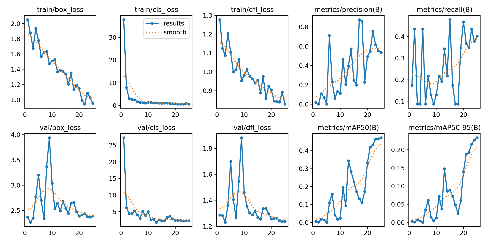

| Asignatura | TEL-328 Procesamiento Digital de Imágenes, UTFSM |
| Equipo | Matías Ramos · Ignacio Cubillos · Bruno Yáñez |
| Versión | Entrega final, noviembre 2026 |
| Código | github.com/BrunoYanezSalas/Balon-Mano-PDI |

HandStats es un conjunto de programas en Python que, a partir del video de un lanzamiento al arco de balonmano, encuentra el balón, sigue su trayectoria desde la mano del lanzador hasta el arco y entrega el resultado del lanzamiento:
Para cada lanzamiento se indica además la zona del arco (grilla de 3 x 3: alta / media / baja por izquierda / centro / derecha), el instante y la posición en centímetros sobre el plano del arco (300 x 200 cm). Los resultados se entregan como videos anotados, una figura con la trayectoria, un CSV con la posición del balón cuadro a cuadro y un archivo de texto con el resultado. La idea nació de una reunión con la Federación de Balonmano de Chile, que necesita estadísticas de lanzamientos de sus jugadores sin anotarlas a mano mirando los videos.
| Programa | Para qué sirve |
|---|---|
src/marcar_esquinas.py | Elegir un cuadro del video y marcar con 4 clicks las esquinas del arco. Entrega el comando listo para el paso siguiente. |
src/pipeline_balon.py | Programa principal. Estabiliza el video, detecta y sigue el balón, y clasifica el lanzamiento. |
src/clasificacion.py | Módulo que decide GOL / ATAJADA / POSTE / FUERA y calcula zona y punto en cm (lo usan los otros programas). |
src/demo_arco.py | Versión para cámara fija frontal (trípode detrás del lanzador). Procesa varios lanzamientos seguidos y dibuja un mapa del arco. |
src/crear_dataset.py, src/entrenar_yolo.py | Construyen un dataset propio del balón y hacen el fine-tuning de YOLO, comparándolo con el modelo pre-entrenado. |
tests/test_clasificacion.py | Pruebas automáticas del clasificador (gol, atajada, poste, fuera, cámara frontal). |
requirements.txt)| Librería | Uso en el proyecto |
|---|---|
opencv-python | Video, ORB, homografías, diferencia de cuadros, morfología, dibujo. |
numpy | Cálculo numérico (trayectorias, velocidades). |
matplotlib | Mapa del arco con todos los lanzamientos. |
ultralytics | Red YOLO: detección, entrenamiento y evaluación. Instala PyTorch. |
imageio-ffmpeg | Opcional. Guarda los videos de salida en H.264. |
1Obtener el código: viene en el archivo 3_Codigo_fuente_HandStats_Ramos_Cubillos_Yanez.zip de la entrega o en el repositorio github.com/BrunoYanezSalas/Balon-Mano-PDI (botón Code → Download ZIP, o git clone https://github.com/BrunoYanezSalas/Balon-Mano-PDI). Abrir una terminal en la carpeta del código (HandStats en el zip, Balon-Mano-PDI si se clonó); en este manual se le llama HandStats.
2Crear un entorno virtual e instalar las librerías:
PS HandStats> python -m venv .venv PS HandStats> .venv\Scripts\activate # en Linux / macOS: source .venv/bin/activate (.venv) PS HandStats> pip install -r requirements.txt
HandStats; luego Ctrl+Shift+P → Python: Select Interpreter y elegir el Python donde se instalaron las librerías (o el de .venv). Los comandos de este manual se escriben en la terminal integrada (Terminal → New Terminal), no con el botón ▶, porque los programas necesitan argumentos.3Copiar los videos en la carpeta videos/. Los videos de prueba se descargan con los enlaces de videos/DESCARGAR_VIDEOS.html (Wikimedia Commons, licencias libres; detalle en docs/videos.md).
4Pesos de YOLO en modelos/: handstats_balon.pt (nuestro modelo, ya incluido en el zip y en el repositorio) y yolo11n.pt (modelo de COCO; ultralytics lo descarga solo la primera vez). Solo hacen falta para el detector YOLO.
5Comprobar la instalación corriendo las pruebas; deben aparecer 6 líneas OK:
(.venv) PS HandStats> python tests\test_clasificacion.py
OK test_demo_real_es_gol OK test_atajada_rebote OK test_poste
OK test_fuera_por_arriba OK test_gol_red_frena OK test_frontal
demo_arco.py).Ejemplo con videos/rusia_gol1.webm: un gol de la Superliga rusa grabado desde la tribuna, con la cámara siguiendo la jugada.
(.venv) PS HandStats> python src\marcar_esquinas.py videos\rusia_gol1.webm

marcar_esquinas.py con las 4 esquinas marcadas (1 a 4) en el cuadro 96.Se abre una ventana con el video. Con la barra cuadro se busca un cuadro donde el arco se vea completo (aquí, el 96). Después se hace click en las 4 esquinas interiores del arco en este orden: superior izquierda, superior derecha, inferior derecha, inferior izquierda (como se ven en la imagen). Teclas: z deshace, s guarda una captura, q sale. Al marcar la cuarta esquina, la terminal muestra el comando listo para copiar:
--ref 96 --esquinas 1205,160 1405,160 1405,740 1205,578 Comando: python src/pipeline_balon.py videos/rusia_gol1.webm --ref 96 --esquinas 1205,160 1405,160 1405,740 1205,578 --hasta 165 --salida salida
Se pega el comando, acotando con --desde y --hasta el tramo donde ocurre el tiro (es más rápido y evita otras jugadas). Tarda unos 10 segundos:
(.venv) PS HandStats> python src\pipeline_balon.py videos\rusia_gol1.webm --desde 70 --hasta 110 --ref 96 --esquinas 1205,160 1405,160 1405,740 1205,578 --salida salida\rusia_gol1
cuadros 70-110 | balón esperado ~55 px (escala 6.89)
1/4 estabilizando... 2/4 detectando candidatos (dif)... 3/4 siguiendo... 4/4 analizando...
Pista balón: cuadros 86-96 (11 detecciones), vel. máx 67.9 px/cuadro
Resultado: {'resultado': 'GOL', 'zona': 'media-izq', 't_s': 3.06, 'x_cm': 23, 'y_cm': 118, 'confianza': 'baja'}
Listo -> salida/rusia_gol1
La línea Resultado resume el lanzamiento. confianza: baja aparece cuando el balón deja de verse justo al entrar (aquí lo tapa el poste) y el gol se decide solo por la entrada.
| Parámetro | Qué es | Cuándo usarlo |
|---|---|---|
--ref, --esquinas | Cuadro de referencia y x,y de las 4 esquinas interiores | Siempre (los entrega marcar_esquinas.py) |
--desde, --hasta | Tramo del video a procesar (cuadros) | Videos con varias jugadas |
--detector | dif (clásico, por defecto) o yolo | YOLO si el balón se mezcla con otros movimientos |
--modelo, --conf | Pesos de YOLO y umbral de confianza | Con --detector yolo |
--estatica | Altura máxima (y) de la zona sin jugadores para estabilizar | Si el video estabilizado "baila" |
--balon-px | Diámetro del balón en píxeles | Si el cálculo automático no calza |
--fps | Cuadros por segundo reales | Archivos con fps erróneo (videos u18: --fps 30) |
--salida | Carpeta de resultados (se crea sola) | Siempre |
| Archivo | Contenido |
|---|---|
demo_balon.mp4 | Video original con el arco (amarillo) seguido aunque la cámara se mueva, la trayectoria (rojo) y el balón (círculo verde). A la derecha, la máscara de movimiento del video estabilizado. |
demo_zoom_lento.mp4 | Zoom al arco en cámara lenta (x4), desde el lanzador hasta el final de la jugada. |
trayectoria_balon.png / .csv | Trayectoria completa sobre el cuadro de referencia; el CSV tiene una fila por cuadro: frame, t_s, x_px_ref, y_px_ref, dentro_arco. |
resultado.txt | Resultado, zona, instante y punto (cm) del lanzamiento. |
etiquetas_balon.csv | Posición del balón en el video original, para agregarla al dataset de YOLO (sección 6). |

demo_balon.mp4. Izquierda: video original con el arco, la grilla de zonas, la trayectoria y el resultado arriba. Derecha: máscara de movimiento (diferencia de 3 cuadros) del video estabilizado, con el balón en verde.demo_zoom_lento.mp4: zoom al arco y máscara.
trayectoria_balon.png: trayectoria y punto de entrada (círculo verde).Cómo leer el resultado. La zona se calcula con el punto donde la red frena el balón (gol) o donde rebota (atajada o poste), proyectado al plano del arco. x_cm va de 0 (poste izquierdo en la imagen) a 300 y y_cm de 0 (travesaño) a 200 (suelo). En el ejemplo, (23, 118) cm cae en la columna izquierda y la fila del medio: media-izq.
Con el detector YOLO propio (--detector yolo) el mismo tiro da GOL media-izq en (22, 117) cm.
El procesamiento sigue estas etapas. Las esquinas del arco vienen de marcar_esquinas.py; todo lo demás lo hace pipeline_balon.py (o demo_arco.py con cámara fija):
Con la cámara en mano, el arco se mueve en la imagen. En cada cuadro se buscan puntos ORB en la zona estática (pared, techo), se emparejan con los del cuadro de referencia (test de razón de Lowe: el mejor vecino debe estar claramente más cerca que el segundo, razón < 0,75) y se calcula una homografía con RANSAC, que descarta los puntos que caen en jugadores en movimiento. Al aplicarla, todos los cuadros quedan alineados con el de referencia y el arco queda fijo. La zona estática se elige con --estatica; por defecto es todo lo que está sobre la base del arco.
Con las 4 esquinas se calcula la homografía imagen → plano del arco (300 x 200 cm). Sirve para dibujar la grilla de 3 x 3 zonas en perspectiva y para convertir cualquier punto de la imagen a centímetros del arco. Solo es exacta para puntos sobre ese plano; por eso se mide el punto donde el balón llega al arco y no durante el vuelo.
Clásica (--detector dif). Sobre el video estabilizado se calculan las diferencias entre los cuadros t-2 y t, y entre t y t+2, y se combinan con un AND: queda solo lo que se movió en el cuadro t (con dos cuadros el objeto aparecería dos veces). Luego vienen umbral, dilatación, componentes conexas y un filtro de tamaño. El tamaño esperado del balón (19 cm) se calcula con la altura del arco en píxeles, así que funciona tanto en video de celular comprimido (balón de ~5 px) como en 1080p (25-50 px). Se descartan las manchas pegadas a objetos grandes (jugadores).
Red neuronal (--detector yolo). YOLO detecta el balón en cada cuadro original y sus centros se llevan al cuadro de referencia con la homografía de estabilización. Puede usarse el modelo de COCO (clase sports ball) o nuestro modelo con fine-tuning (clase balon, sección 6).
Los candidatos se unen entre cuadros con un modelo de velocidad constante: se predice dónde debería estar el balón y se acepta el candidato más cercano dentro de una ventana que crece si se pierden cuadros. La pista del balón es la que tiene la racha más larga de pasos rápidos en la misma dirección (balón en vuelo); después se completa hacia atrás hasta la mano del lanzador.
clasificacion.py lleva la trayectoria al plano del arco (cm) y la analiza:

tests/test_clasificacion.py en el plano del arco (cm). La línea azul es la trayectoria y el círculo es el punto que informa el clasificador. El primero es una trayectoria real; los demás conservan su llegada y cambian lo que pasa después.Con cámara frontal (demo_arco.py) se usa el diámetro aparente del balón: al alejarse de la cámara se achica, y la llegada al arco es cuando coincide con el esperado a esa distancia. Si después vuelve a crecer más de 25 %, el balón rebotó hacia la cámara: atajada o poste. En los videos, GOL se dibuja en verde, ATAJADA en naranjo, POSTE en amarillo y FUERA en rojo.
Pensado para el montaje definitivo con trípode. Recibe un video propio de una sesión de lanzamientos (en los ejemplos, videos\sesion.mp4, que no se incluye porque los videos públicos que conseguimos son de cámara lateral):
(.venv) PS HandStats> python src\demo_arco.py videos\sesion.mp4 --modelo modelos\handstats_balon.pt # YOLO propio (.venv) PS HandStats> python src\demo_arco.py videos\sesion.mp4 --metodo fondo --esquinas 812,402 1110,398 1112,600 810,604
Pide las 4 esquinas con clicks (o se pasan con --esquinas) y las guarda en <video>_arco.json. Procesa todos los lanzamientos y genera <video>_anotado.mp4, <video>_lanzamientos.csv (una fila por lanzamiento: instante, resultado, zona, x_cm, y_cm) y <video>_mapa_arco.png (todos los tiros sobre el arco, coloreados por resultado). Con --metodo fondo usa sustracción de fondo (MOG2) en lugar de YOLO.
El YOLO pre-entrenado con COCO casi no detecta el balón de balonmano en vuelo: a 30 fps el balón sale desenfocado (una mancha alargada), y en COCO la clase sports ball son sobre todo balones quietos o de fútbol. Por eso entrenamos un modelo propio con una sola clase, balon.
(.venv) PS HandStats> python src\crear_dataset.py videos\rusia_gol1.webm videos\rusia_gol2.webm videos\selestat1.ogg videos\u18_action.webm videos\u18_but.webm videos\selestat2.ogg --modelo modelos\yolo11n.pt --val selestat2 --salida dataset
El etiquetado es semiautomático, con dos "profesores" y revisión manual:
pipeline_balon.py se exporta en etiquetas_balon.csv (por ejemplo dataset_etiquetas/pipeline_rusia_gol1.csv). También se agregan etiquetas hechas a mano (manual_u18_but.csv).dataset/revision_XX.jpg con cada etiqueta numerada; las malas se borran por número, y parte de ellas se guarda como negativo difícil (imagen sin balón):(.venv) PS HandStats> python src\crear_dataset.py --salida dataset --descartar 1 2 3 4 5 (.venv) PS HandStats> python src\crear_dataset.py --salida dataset --extra dataset_etiquetas\*.csv --val u18_but

(.venv) PS HandStats> python src\entrenar_yolo.py --datos dataset\data.yaml --base modelos\yolo11n.pt --epocas 25 --imgsz 512 (.venv) PS HandStats> python src\entrenar_yolo.py --datos dataset\data.yaml --base modelos\yolo11n.pt --device 0 # con GPU
Parte de los pesos de COCO (yolo11n.pt) y entrena con aumentaciones (giro, escala, brillo, volteo horizontal). Sin --epocas ni --imgsz usa 40 épocas a 640 px; nuestro modelo se entrenó con el primer comando (25 épocas a 512 px en CPU, 32 minutos). Al terminar guarda modelos/handstats_balon.pt y lo compara con el de COCO sobre el conjunto de validación: 38 imágenes de videos no usados para entrenar (23 balones: selestat2 y el vuelo de u18_but etiquetado a mano). Precisión, recall y F1 con confianza 0,25; AP50 con todas las predicciones.
| Modelo | Precisión | Recall | F1 | AP50 |
|---|---|---|---|---|
COCO pre-entrenado (yolo11n.pt) | 0.667 | 0.087 | 0.154 | 0.26 |
HandStats fine-tuning (handstats_balon.pt) | 1.0 | 0.217 | 0.357 | 0.506 |
El modelo propio casi duplica el AP50 (0,26 → 0,51) y no tiene falsos positivos con confianza 0,25. Como la validación es chica, conviene leer las cifras como conteos: el recall pasa de encontrar 2 a 5 de los 23 balones, y la precisión 1,0 son 5 aciertos en 5 predicciones. El recall sigue bajo porque el balón en vuelo a 30 fps sale como una estela larga y hay pocos ejemplos así; se mejora grabando más lanzamientos (idealmente a 60 fps) y entrenando con GPU.


| Video | Detector | Resultado del sistema | Real | Comentario |
|---|---|---|---|---|
| penal1 (avance)* | dif. 3 cuadros | GOL alta | GOL | Trayectoria del video de la entrega de avance; prueba automática |
| rusia_gol1 | dif. 3 cuadros | GOL media-izq | GOL | Balón seguido 11 cuadros hasta la red |
| rusia_gol1 | YOLO COCO | sin pista | GOL | Detectó el balón en 1 de 15 cuadros |
| rusia_gol1 | YOLO propio | GOL media-izq | GOL | 10 cuadros; ojo: video usado en entrenamiento |
| u18_but | dif. 3 cuadros | sin llegada | GOL | Siguió a una jugadora: paralaje del piso |
| u18_but | YOLO COCO | sin pista | GOL | No ve el balón en vuelo |
| u18_but | YOLO propio | sin pista | GOL | Ve el balón en 3 de 11 cuadros de vuelo; faltan estelas largas en el dataset |
* El video penal1 (grabado con celular y enviado por WhatsApp) fue el de la entrega de avance y no se incluye; su trayectoria está en docs/trayectoria_balon.csv y es la base de las pruebas automáticas (Figura 5).
En escenas simples (fondo limpio, pocos jugadores cerca del balón) el método clásico funciona. Con cámara en mano que se desplaza y mucho movimiento cerca, falla por paralaje. El modelo propio mejora la detección, pero todavía no basta en ese caso.
| Problema | Causa probable | Qué hacer |
|---|---|---|
| "No se encontró una pista de balón" | El balón no se separa del fondo o el tramo no incluye el tiro. | Revisar --desde/--hasta; probar --detector yolo; ajustar --balon-px. |
| En la máscara aparecen líneas de la cancha | Estabilización mala (paralaje del piso o puntos ORB sobre jugadores). | Bajar --estatica a la pared sobre el arco; elegir un tramo más corto. |
| La pista sigue a un jugador | Brazo o pierna del tamaño del balón. | Usar --detector yolo con el modelo propio. |
| Tiempos raros (t_s muy chicos) | El archivo trae fps erróneo. | Pasar --fps con el valor real. |
| Videos de salida no se reproducen | Falta ffmpeg (quedan en MPEG-4). | pip install imageio-ffmpeg o abrir con VLC. |
| VS Code marca Import "cv2" could not be resolved | El intérprete elegido en VS Code no es el que tiene las librerías. | Ctrl+Shift+P → Python: Select Interpreter (sección 2.3). Es solo un aviso del editor. |
| Error the following arguments are required | Se corrió el programa sin argumentos (por ejemplo, con el botón ▶). | Correrlo desde la terminal con el comando completo (sección 4). |
| Error "The function is not implemented. Rebuild the library..." al abrir una ventana | Quedó instalado opencv-python-headless (lo trae ultralytics), sin ventanas. | pip uninstall -y opencv-python-headless opencv-python y luego pip install opencv-python. |
| "No module named ultralytics" | Faltan las librerías de YOLO. | pip install -r requirements.txt. |
pipeline_balon.py carga el video en memoria (~1 GB para un clip de 5 s en 1080p): se usa con clips cortos de cada lanzamiento, no con un partido completo.Créditos de los videos (Wikimedia Commons): "2021-03-31 - Russian Handball Superliga - CSKA v Ufa-Alisa" (goles de E. Rabazulkina y N. Chigirinova), autor Voltmetro, CC BY-SA 4.0. "But (Sélestat) (1)" y "(2)", autor Gzen92, CC BY-SA 4.0. "Championnat de France féminin de handball U18 - Entente Pays de l'Ain vs La Motte-Servolex (2017-11-12)" ("action" y "but"), autor Benoît Prieur, CC0. Las imágenes de este manual son cuadros de esos videos procesados por HandStats.